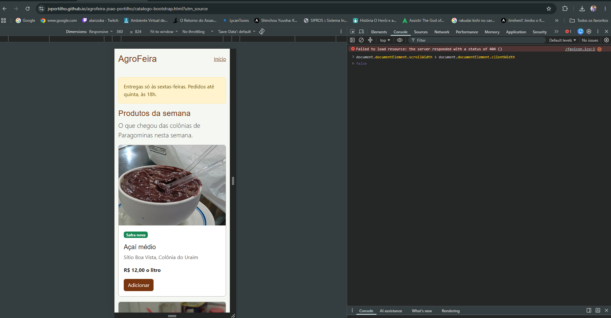
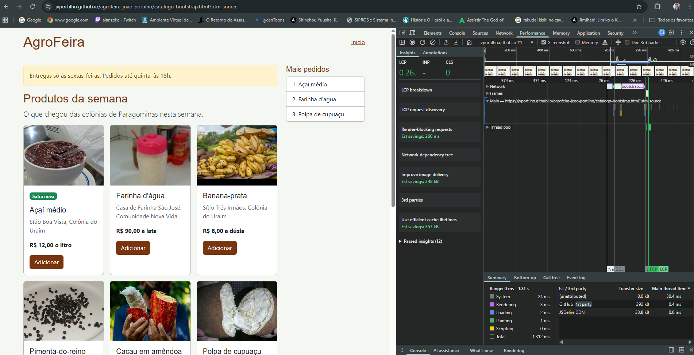
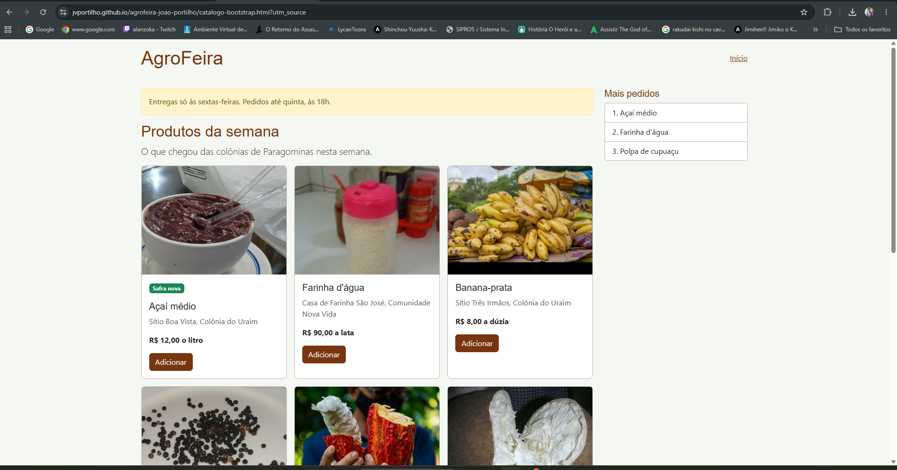
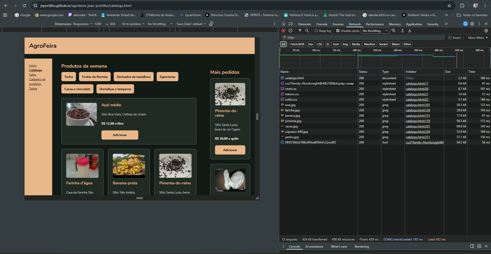
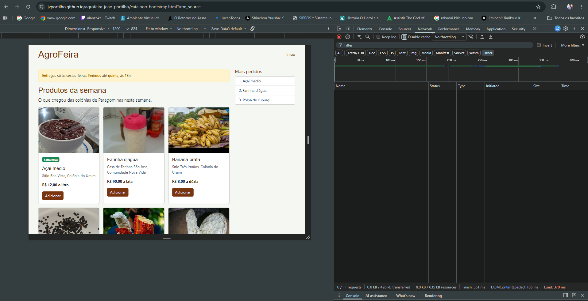
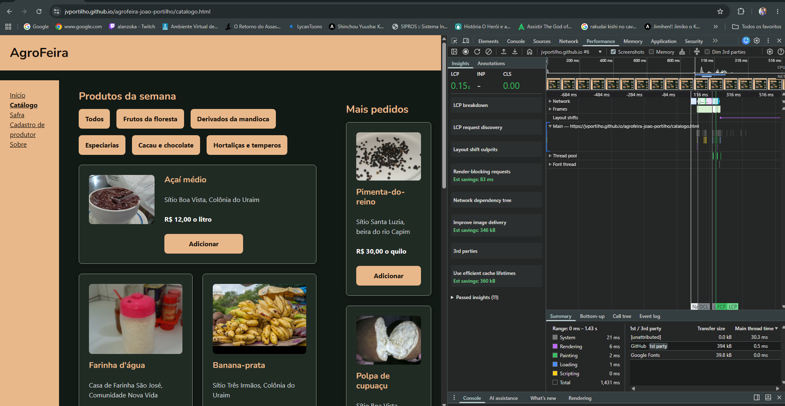
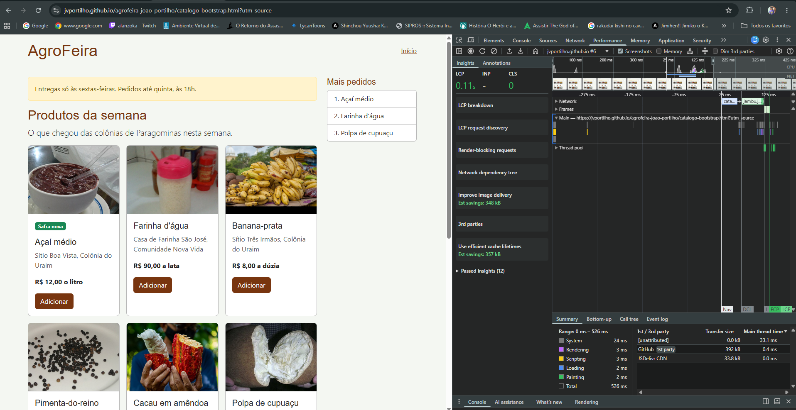

1. Introdução
Este comparativo apresenta os testes realizados no projeto AgroFeira, desenvolvido para divulgar produtos de agricultores e produtores da região de Paragominas.
O objetivo foi avaliar a responsividade do catálogo e comparar o desempenho de duas versões: uma desenvolvida com CSS próprio e outra utilizando o framework Bootstrap.
2. Teste de responsividade em 360 px
O primeiro teste foi realizado em uma largura de 360 pixels, simulando a tela de um smartphone. Foram observados o menu, os botões, as imagens e a organização dos produtos.

3. Teste em 1200 px antes dos ajustes
Nesta etapa foi analisada a organização do catálogo em uma largura de 1200 pixels, antes das alterações nas regras de estilo.

4. Ajustes no CSS e resultado
Foram analisadas as regras de estilo aplicadas aos botões, considerando a apresentação e o comportamento dos elementos da página.

Após os ajustes, a página foi novamente analisada em 1200 pixels para comparar a organização visual.

5. Análise da rede
Na aba Network do Chrome DevTools, foram observados os arquivos carregados, a quantidade de requisições e o volume de dados transferidos pelas duas versões do catálogo.
Versão com CSS próprio

Versão com Bootstrap

Os testes mostram os recursos utilizados pelas duas implementações. A versão com CSS próprio utiliza arquivos desenvolvidos para o projeto, enquanto a versão Bootstrap também carrega recursos do framework.
6. Análise do LCP
O Largest Contentful Paint (LCP) mede quanto tempo o maior elemento de conteúdo visível da página leva para ser renderizado.
As medições foram realizadas utilizando a aba Performance do Chrome DevTools.
LCP — CSS próprio

LCP — Bootstrap

7. Comparação dos resultados
A tabela apresenta resultados observados em capturas específicas dos testes realizados.
| Indicador | CSS próprio | Bootstrap |
|---|---|---|
| Requisições | 13 | 11 |
| Dados transferidos | 434 kB | 426 kB |
| Tempo de carregamento | 432 ms | 370 ms |
| CLS | 0,00 | 0 |
| LCP observado | 0,15 s | 0,11 s |
8. Conclusão
Os testes realizados no projeto AgroFeira permitiram compreender melhor a importância da responsividade e da análise de desempenho em aplicações web.
A versão desenvolvida com CSS próprio oferece maior controle sobre os estilos e a identidade visual do projeto. Já o Bootstrap facilita a organização da interface por meio de componentes e classes prontas.
Nas medições selecionadas, a versão Bootstrap apresentou valores menores de transferência de dados, tempo de carregamento e LCP. Entretanto, os resultados isolados não permitem afirmar que uma tecnologia será sempre mais rápida que a outra.
A atividade contribuiu para o aprendizado sobre desenvolvimento responsivo, inspeção de elementos, análise de rede e métricas de desempenho utilizando o navegador.
9. Acesso às páginas
As duas versões do catálogo podem ser acessadas para comparação visual.
Ver catálogo CSS próprio Ver catálogo Bootstrap Voltar ao início